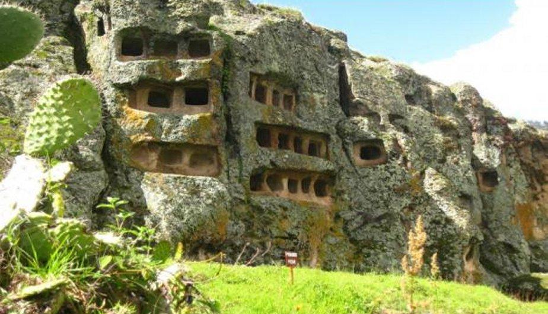
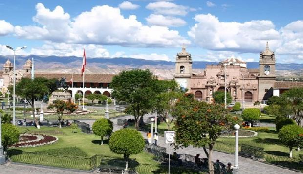
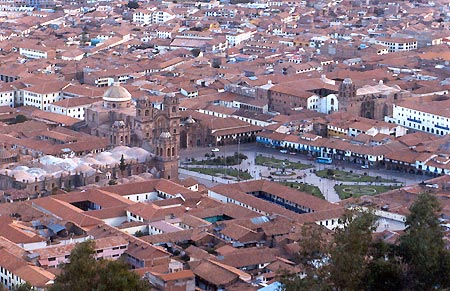

Las Ventanillas de Otuzco, también llamadas Necrópolis de Otuzco, son unas edificaciones funerarias que por su forma parecen ser ventanas, de ahí su nominación de Ventanillas. Estas se encuentran ubicadas en el centro poblado de Otuzco, en el distrito de Cajamarca (a 8 kilómetros), en la provincia y departamento del mismo nombre; asentada en el cerro Llanguil. A una altura de 2850 metros sobre el nivel del mar y hubiera sido construida en los primeros siglos de nuestra era. Es Considerado Patrimonio Cultural del Perú.
Se trata de un cementerio construido, al igual que las Ventanillas de Combayo, por la Cultura Cajamarca. En este se observa, a nivel arquitectónico el trabajo de excavaciones que se han realizado en roca viva (roca traquita) en los farallones del cerro mismo y que, al igual que su homóloga edificación en el cerro San Cristóbal, se encuentra dividida en hileras superpuestas de nichos. Estos nichos, a su vez se presentan de dos maneras: simples, en donde solo se observa una estructura cuadrangular o rectangular; y en forma de galerías, es decir nichos conectados por dentro, entre sí. Cabe mencionar que en esta construcción también se observa la presencia de canaletas, estas estarían presentes con fines de conservación de los nichos ya que evitarían, mediante su fin de drenaje, que la humedad ocasionada por el agua empozada de las lluvias dañaran a sobremanera la edificación.
Vive una experiencia inolvidable y mágica en uno de los mejores trenes del mundo. Machu Picchu te espera. Conoce nuestros trenes. Venta Online. Elige tu destino. Destinos: Cusco: Machu Picchu, Puno: Lago Titicaca, Arequipa, Ollantaytambo, Urubamba